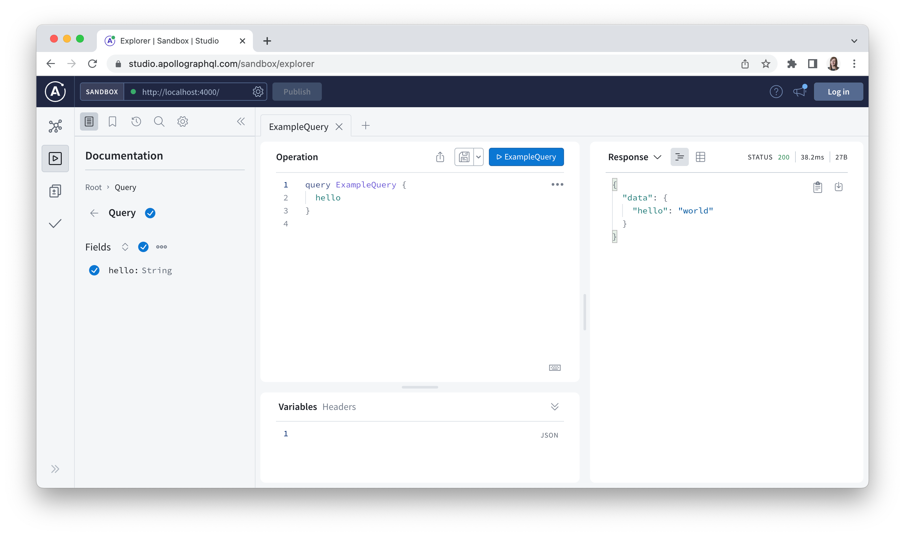

Chapter 1: Apollo Federation and Gateway
In this chapter, we will:
- Configure a basic development environment
- Set up Express and instantiate a new
ApolloServer - Explore Apollo Federation and its use cases
- Create an Apollo Gateway with a single subgraph schema composed into its supergraph schema
A Basic Apollo Server
One of the main value propositions of Apollo Federation is that it allows you to expose a single GraphQL endpoint to clients while allowing back-end service teams to each manage a logical subsection of the broader schema. From a client developer’s perspective, they send their requests to a single GraphQL API, but behind the scenes, we have the flexibility to distribute ownership of the schema’s type definitions while composing them together in a single, federated API.
By the end of this book, we’ll have an Apollo Server configured for the gateway service plus each of the four subgraph services that we’ll eventually build out (refer to the Preface for a detailed architectural overview of the Marked app). To get started, we’ll set up a basic Apollo Server, then make some modifications to it to work in conjunction with the @apollo/gateway package, and finally create our first subgraph for user accounts data.
We’ll begin by creating a top-level project directory to house all of the code for the back-end services we’ll build for this project. Inside of that new directory, create a subdirectory called gateway. From inside the new gateway subdirectory, run the following commands to create a boilerplate package.json file and install the initial packages we need to set up Apollo Server:
gateway/
npm init --yes
npm i apollo-server-express@3.7.0 dotenv@16.0.0 express@4.17.3 graphql@16.5.0
npm i -D nodemon@2.0.15
Eventually, we’ll need to use middleware with this server to support user authentication, so instead of installing the apollo-server package, we installed apollo-server-express and express. Doing so will allow us to use Express to integrate Node.js middleware with Apollo Server later on.
We also need the graphql peer dependency that’s required by Apollo (it’s the library used to build a schema and to execute queries against that schema). We also install the dotenv package to configure environment variables for this service. Lastly, we install nodemon as a development dependency to restart the Node.js process when changes are saved in our project’s gateway files.
This project will use import and export syntax to load ES modules so we’ll need to declare that in the package.json file by setting the type property to module. We’ll also replace the auto-generated scripts with one to start the gateway using nodemon with the dotenv module preloaded using the -r flag as follows:
gateway/package.json
{
// ...
"type": "module",
"scripts": {
"dev": "nodemon -r dotenv/config -e env,graphql,js ./src/index.js"
},
// ...
}
We don’t have a src subdirectory or an index.js file yet, so we’ll create src inside of gateway and then create an index.js file inside of that. This index.js file will be the main entry point for our gateway code.
Additionally, we’ll create a .env file at the root of the gateway directory. With the help of the dotenv package we just installed, the .env file will allow us to define environment-specific variables for the Marked application. These values will be accessible on the process.env global variable, which is loaded into the Node.js process at runtime.
Note that .env files often contain sensitive values such as API keys, so if you’re using Git for version control in this project, then be sure to adhere to the best practice of adding the .env file to your .gitignore file before your next commit.
Our first two variables will be NODE_ENV to identify our environment as development and PORT to identify the port where our GraphQL API may be accessed:
gateway/.env
NODE_ENV=development
PORT=4000
Next, we’ll configure a basic, non-federated Apollo/Express server in the index.js file first, which will ultimately be used for the gateway. We’ll start by importing the required modules, getting the PORT environment variable value, and creating a new Express app inside of it:
gateway/src/index.js
import http from "http";
import { ApolloServer, gql } from "apollo-server-express";
import { ApolloServerPluginDrainHttpServer } from "apollo-server-core";
import express from "express";
const port = process.env.PORT;
const app = express();
const httpServer = http.createServer(app);
// We'll create an Apollo Server here next...
In the code above, note that the ApolloServerPluginDrainHttpServer plugin will allow us gracefully shut down Apollo Server when using one of its Node.js integrations, such as Express. For initial testing purposes, we’ll add a single hello field to the root Query type and create a map of resolver functions for the schema:
gateway/src/index.js
// ...
const typeDefs = gql`
type Query {
hello: String
}
`;
const resolvers = {
Query: {
hello() {
return "world";
}
}
};
Next, we’ll instantiate a new ApolloServer, integrate it with the Express app defined above by adding it to the app’s middleware, and then listen for connections on port 4000:
gateway/src/index.js
// ...
const gateway = new ApolloServer({
typeDefs,
resolvers,
plugins: [ApolloServerPluginDrainHttpServer({ httpServer })]
});
await gateway.start();
gateway.applyMiddleware({ app, path: "/" });
await new Promise(resolve => httpServer.listen({ port }, resolve));
console.log(
`Gateway ready at http://localhost:${port}${gateway.graphqlPath}`
);
Now we can start our server by running the following command:
gateway/
npm run dev
We can use Apollo Sandbox Explorer to check if the GraphQL API is working as expected at this point. The Explorer IDE is readily available through a running Apollo Server and can be accessed in a browser via the same URL that we use for the GraphQL endpoint itself. In our case, this URL is http://localhost:4000 and once you reach the landing page you can access the Explorer user interface by clicking the “Query your server” button. If you’re new to Explorer but have used GraphQL Playground or GraphiQL in the past, then you should feel right at home.
Once you’ve opened Explorer you should be able to see the hello field that we added to the root Query type along with an example operation. Click the blue button to submit the operation and confirm that you can see the following response:

We are currently using Explorer inside of Apollo Sandbox, which means we don’t need to create an Apollo Studio account to run operations against our schema. In Chapter 9, we will create an Apollo Studio account to configure managed federation for our GraphQL API, which will also provide access to the full-featured version of Explorer.
Organize the Server Files
To set ourselves up for success later, we’ll do some file reorganization now because it will quickly become cumbersome to keep all of our gateway code inside of a single index.js file. Start by creating a config subdirectory in gateway/src, then create apollo.js and app.js files inside of config. We’ll move the following code from index.js to apollo.js, wrapping it in a function called initGateway and returning the ApolloServer object from it:
gateway/src/config/apollo.js
import { ApolloServer, gql } from "apollo-server-express";
import { ApolloServerPluginDrainHttpServer } from "apollo-server-core";
function initGateway(httpServer) {
const typeDefs = gql`
type Query {
hello: String
}
`;
const resolvers = {
Query: {
hello() {
return "world";
}
}
};
return new ApolloServer({
typeDefs,
resolvers,
plugins: [ApolloServerPluginDrainHttpServer({ httpServer })]
});
}
export default initGateway;
Now we’ll move the express import and the app variable into app.js. We will also make app the default export from this file:
gateway/src/config/app.js
import express from "express";
const app = express();
export default app;
Next, we can import the new modules at the top of index.js, call the initGateway function, and assign its return value to gateway instead. The updated index.js file will look like this now:
gateway/src/index.js
import http from "http";
import app from "./config/app.js";
import initGateway from "./config/apollo.js";
const port = process.env.PORT;
const httpServer = http.createServer(app);
const gateway = initGateway(httpServer);
await gateway.start();
gateway.applyMiddleware({ app, path: "/" });
await new Promise(resolve => httpServer.listen({ port }, resolve));
console.log(
`Gateway ready at http://localhost:${port}${gateway.graphqlPath}`
);
And the current file structure in our project directory will now look like this:
gateway
├── node_modules/
| └── ...
├── src/
| └── config
| └── apollo.js
| └── app.js
| └── index.js
├── .env
├── package.json
├── package-lock.json
When we save the new files and the server restarts we should see that the GraphQL API works just as it did before.
Why Use Apollo Federation?
Before we proceed with refactoring our code further to convert our existing Apollo Server into a gateway, it would be a good idea to pause and consider why we would want to do this in the first place. We have a perfectly viable GraphQL API already up and running, so how do we know that using Apollo Federation now will be the right choice moving forward?
One of the most compelling reasons to create any kind of GraphQL API is that it allows us to expose a single API endpoint (with any number of data sources behind it) and query data in a way that reflects the natural relationships between the nodes in the graph. However, as we express more and more pieces of data and their relationships through types and fields, it doesn’t take long for even a moderately complex GraphQL API to contain many different type definitions.
A large number of type definitions doesn’t necessarily warrant a federated approach on its own, but there tends to be a positive correlation between the number of type definitions in a schema and the number of teams ultimately making contributions to that schema. And as more people contribute to the active evolution of the schema (that is one of the promises of GraphQL, after all!), a monolithic GraphQL API can quickly become a bottleneck for teams that need to ship updates to type definitions that are relevant to the services they maintain.
Alternatively, multiple GraphQL APIs may simultaneously spring up within an organization, leading to duplication of effort to maintain them and inevitable type definition inconsistencies that makes it challenging for clients to query any GraphQL endpoint as a definitive source of truth for all of the data they require. In the end, both the monolithic and multiple GraphQL API options have obvious shortcomings, especially when used with well-worn approaches to distributed application development such as microservice architectures.
Ideally, where multi-team collaboration is required, we would break up a GraphQL schema and assign ownership of type definitions to teams that already manage services and data sources that will be responsible for resolving those fields. Within their own subgraphs, teams should also be able to use types defined in other subgraphs as output types for fields and even augment those types with additional fields where needed. Lastly, these implementation details should be opaque to client developers. In other words, clients should be able to enjoy one of the key advantages of GraphQL and query a single endpoint as the source of truth for all of the data they require to render user interfaces. This is precisely what Apollo Federation allows us to do.
So in short, there are two main architectural components specific to Apollo Federation:
- The subgraph services that each represent part of the overall graph
- A top-level gateway service whose API is composed of the subgraph schemas
With these concepts in mind, we’re almost ready to set up our first subgraph service.
What about schema stitching?
Before Apollo Federation, there was an existing solution available to build these top-level gateway APIs with GraphQL called schema stitching. However, with schema stitching we may find ourselves wrestling with where to draw boundaries between services. Splitting services by type may seem intuitive at first but can get messy as we try to express complex relationships between the different types across services. It doesn’t take long for numerous “ID” fields to begin showing up in a service’s schema that look more like foreign key references than a real connection to a type from the other service. When fields such as this appear an API begins to lose some of the expressiveness at the heart of GraphQL.
Additionally, schema stitching can require significant boilerplate code at the gateway level to effectively consolidate the graph, and that introduces a critical point of possible failure in an application’s architecture.
Schema stitching was a step in the right direction for supporting distributed applications powered by multiple GraphQL APIs, but Apollo Federation presents a next-generation approach that allows us to declaratively define the gateway API in a way that cuts down on boilerplate and also allows a more natural separation of concerns between services.
But First, More Refactoring
Before we attempt to build a subgraph schema for use in the gateway, we’ll need to do more refactoring to tidy up our Apollo Server set-up in apollo.js. The first subgraph we create will handle user account data from Auth0. To begin, we’ll need to create an accounts subdirectory inside of the top-level project directory (it will be a sibling to gateway).
It’s worth noting here that the gateway and subgraph services we create for the Marked application would likely be independent projects with different teams maintaining each of them in separate repositories. However, for simplicity’s sake, we’ll organize them in a single directory for all of our project’s code.
We’ll create a src directory inside of accounts, and then an index.js file and graphql subdirectory inside of src. Next, we’ll add resolvers.js and schema.graphql files inside of accounts/src/graphql. Our next step will be to move the root Query type and its single hello field into the new schema.graphql file. We are using a .graphql file extension and writing our type definitions using GraphQL’s Schema Definition Language (SDL) so there’s no need to wrap this code in the gql template literal tag or define a typeDefs variable here as we would if we were using a .js file for the type definitions instead.
However, because we will be using the second version of the the Federation subgraph specification in this project (also known as “Federation 2”), we must include a special extend schema definition at the top of the file:
accounts/src/graphql/schema.graphql
extend schema
@link(url: "https://specs.apollo.dev/federation/v2.0", import: ["@key"])
type Query {
hello: String
}
Without the extend schema definition in this file, Apollo Federation’s composition algorithm would assume this subgraph uses Federation 1 semantics. While both Federation 1 and Federation 2 subgraphs can be composed together, only subgraphs that include the previous definition can make use of Federation 2 semantics. The @link directive’s import argument indicates which of Apollo Federation’s directives will be used in the subgraph schema. For the accounts services, we will only need to import the @key directive, but we will use other Federation 2 directives for subgraphs in subsequent chapters.
Now we’ll move the resolvers constant from apollo.js into the new resolvers.js file and make resolvers the default export from it:
accounts/src/graphql/resolvers.js
const resolvers = {
Query: {
hello() {
return "world";
}
}
};
export default resolvers;
We’ll then create a server variable in the accounts service’s index.js file and instantiate a new ApolloServer here, passing in typeDefs and resolvers as we did previously in the gateway:
accounts/src/index.js
const server = new ApolloServer({
typeDefs,
resolvers
});
You may have noticed that we instantiate an ApolloServer in the accounts service now but we haven’t yet imported this module at the top of the index.js file. We’ll need to create a package.json file for the accounts service too and install this dependency. We won’t need to add Express middleware in this service, so the basic apollo-server package will be sufficient. We can also omit the ApolloServerPluginDrainHttpServer plugin here because this is handled under the hood when using Apollo Server without the explicit Express integration. We will need to install graphql, dotenv, and nodemon here as well. Run the following commands directly inside the accounts directory to do that:
accounts/
npm init --yes
npm i apollo-server@3.7.0 dotenv@16.0.0 graphql@16.5.0
npm i -D nodemon@2.0.15
We’ll update the new package.json file to support ES modules and include a script to start the server with nodemon, also watching for changes to .graphql files this time:
accounts/package.json
{
// ...
"type": "module",
"scripts": {
"dev": "nodemon -r dotenv/config -e env,graphql,js ./src/index.js"
},
// ...
}
Now we can add the import for it at the top of index.js:
accounts/src/index.js
import { ApolloServer, gql } from "apollo-server";
const server = new ApolloServer({
typeDefs,
resolvers
});
Each subgraph service will have a unique Node.js process and expose its portion of the API on a unique port. Let’s create a dedicated .env file in accounts and set its NODE_ENV and also set its PORT value to be a different port number than the gateway:
accounts/.env
NODE_ENV=development
PORT=4001
Over in the accounts service’s index.js file, we’ll import the resolvers and define a port constant using the environment variable. Unlike before when we defined the type definitions as a string in a .js file, we put our type definitions in a .graphql file here so we have to read the contents of that file as a string and pass it into the gql function to parse it into a standard GraphQL AST. Note that we must also manually define the __dirname constant when using ES modules, so we will import some additional built-in modules to assist with that:
accounts/src/index.js
import { dirname, resolve } from "path";
import { fileURLToPath } from "url";
import { readFileSync } from "fs";
import { ApolloServer, gql } from "apollo-server";
import resolvers from "./graphql/resolvers.js";
const __dirname = dirname(fileURLToPath(import.meta.url));
const port = process.env.PORT;
const typeDefs = gql(
readFileSync(resolve(__dirname, "./graphql/schema.graphql"), "utf-8")
);
const server = new ApolloServer({
typeDefs,
resolvers
});
With that code in place, we can start the accounts service’s server by calling the server object’s listen method and logging a success message to the console:
accounts/src/index.js
// ...
const { url } = await server.listen({ port });
console.log(`Accounts service ready at ${url}`);
Lastly, we’ll do some final clean-up by removing the gql import from apollo-server-express in the apollo.js file because we no longer need it here. We can also remove the typeDefs and resolvers that were passed directly into this ApolloServer before. The apollo.js file will currently look like this:
gateway/config/apollo.js
import { ApolloServer } from "apollo-server-express";
import { ApolloServerPluginDrainHttpServer } from "apollo-server-core";
function initGateway(httpServer) {
return new ApolloServer({
plugins: [ApolloServerPluginDrainHttpServer({ httpServer })]
});
}
export default initGateway;
Unfortunately, our gateway server can’t be restarted quite yet because the initGateway function no longer returns a valid ApolloServer object. To address this error, we will finally convert this Apollo Server into a gateway in the next section.
Compose a Subgraph into the Gateway
It’s time to finish transforming the accounts service’s GraphQL API into a subgraph that can be composed into a schema that will be used by the Apollo Gateway. After that, we’ll set up the gateway-level GraphQL API so we can get that server back up and running. To begin, we’ll install the @apollo/subgraph package in the accounts directory:
accounts/
npm i @apollo/subgraph@2.0.3
All of the code in this project complies with v2 of the Apollo Federation subgraph specification, so be sure to install 2.x versions of the @apollo/subgraph and @apollo/gateway packages as you work through this book.
To make the accounts service’s schema federation-ready, we have to make some additions to our schema so that the gateway API can execute entity-related queries against it. Specifically, we need to add the following types, fields, and directives to the schema:
scalar _Any
scalar _FieldSet
union _Entity = # a union of all types that use the @key directive
type _Service {
sdl: String
}
extend type Query {
_entities(representations: [_Any!]!): [_Entity]!
_service: _Service!
}
directive @key(fields: FieldSet!, resolvable: Boolean = true) repeatable on OBJECT | INTERFACE
directive @requires(fields: FieldSet!) on FIELD_DEFINITION
directive @provides(fields: FieldSet!) on FIELD_DEFINITION
directive @external on OBJECT | FIELD_DEFINITION
directive @shareable on FIELD_DEFINITION | OBJECT
directive @extends on OBJECT | INTERFACE
directive @override(from: String!) on FIELD_DEFINITION
directive @inaccessible on
| FIELD_DEFINITION
| OBJECT
| INTERFACE
| UNION
| ENUM
| ENUM_VALUE
| SCALAR
| INPUT_OBJECT
| INPUT_FIELD_DEFINITION
| ARGUMENT_DEFINITION
You can learn more about how these types, fields, and directives support entity resolution in the Apollo Federation specification.
By following this specification and adding support for these definitions to a schema, any GraphQL server in any language can also provide support for Apollo Federation.
Luckily, we don’t have to add these definitions to any of our subgraphs manually because the @apollo/subgraph package exposes a function called buildSubgraphSchema that does this work for us. In the accounts service’s index.js file we’ll import buildSubgraphSchema from @apollo/subgraph:
accounts/src/index.js
// ...
import { ApolloServer, gql } from "apollo-server";
import { buildSubgraphSchema } from "@apollo/subgraph";
// ...
And we also need to change how we instantiate the ApolloServer in that file by calling buildSubgraphSchema, passing the typeDefs and resolvers directly into that function as arguments, and then setting the return value for the schema option instead:
accounts/src/index.js
// ...
const server = new ApolloServer({
schema: buildSubgraphSchema({ typeDefs, resolvers })
});
const { url } = await server.listen({ port });
console.log(`Accounts service ready at ${url}`);
The accounts service has finally reached a point where we can successfully start the server. From the accounts directory, run the following command:
accounts/
npm run dev
Because each subgraph is a self-contained GraphQL API, we can view and run queries against it in Explorer just as we did with the gateway. If you navigate to http://localhost:4001 in your browser and launch Explorer, then you’ll see the hello field on the root Query type, along with the _service field that was added when we decorated our subgraph schema using the buildSubgraphSchema function (note that the _entities field won’t be added to the schema until we define an entity type later in the chapter).
Let’s try running the following operation in Explorer:
GraphQL Query
query {
_service {
sdl
}
}
The string value of the sdl field in the response will be quite long, but if we take a close look then we should see that the SDL string for the subgraph includes the extend schema and Query type definitions as expected, and it also includes definitions from the Federation 2 specification.
Querying a subgraph endpoint as we just did can be useful in a development environment. However, it’s a best practice in production environments to restrict the outside world from sending requests directly to subgraphs and only allow the gateway to run operations against these endpoints.
Now that the accounts service’s subgraph is ready we can create an initial supergraph schema from it to pass into an ApolloGateway. A supergraph schema is a GraphQL schema that has been composed of one or more subgraphs. This schema won’t be exposed directly to clients but will include some additional metadata that allows an Apollo Gateway to know what subgraphs can resolve which fields while also allowing it to generate the client-friendly schema that we would expect to be served by the gateway API.
There are a few different ways that we can generate a supergraph schema’s SDL for the gateway. The approach that we’ll take now is to instantiate a new IntrospectAndCompose object (provided by @apollo/gateway) and pass it into an ApolloGateway object as the supergraphSdl option. To do that, we’ll need to install the Apollo Gateway package in the gateway directory:
gateway/
npm i @apollo/gateway@2.0.3
We will also set an environment variable for the ACCOUNTS_ENDPOINT in the gateway’s .env file:
gateway/.env
NODE_ENV=development
PORT=4000
ACCOUNTS_ENDPOINT=http://localhost:4001
We will then configure the ApolloGateway object as follows and set it as the gateway option in the ApolloServer object:
gateway/src/config/apollo.js
import { ApolloGateway, IntrospectAndCompose } from "@apollo/gateway";
import { ApolloServer } from "apollo-server-express";
import { ApolloServerPluginDrainHttpServer } from "apollo-server-core";
function initGateway(httpServer) {
const gateway = new ApolloGateway({
supergraphSdl: new IntrospectAndCompose({
subgraphs: [
{ name: "accounts", url: process.env.ACCOUNTS_ENDPOINT }
],
pollIntervalInMs: 1000
})
});
return new ApolloServer({
gateway,
plugins: [ApolloServerPluginDrainHttpServer({ httpServer })]
});
}
export default initGateway;
By providing a list of subgraph endpoints to IntrospectAndCompose, the gateway can introspect these endpoints—much like we did using the _service field above—and compose the supergraph SDL at runtime. We also set a poll interval of 1000 milliseconds so that the gateway will fetch updated SDLs from the subgraphs automatically as we develop them. Note that the IntrospectAndCompose option is suitable for development environments, but a better approach for production environments is to use managed federation with Apollo Studio, as we will see in Chapter 9.
With that code in place, we’re ready to start up the gateway. Confirm that the accounts service is still up and running on http://localhost:4001 and then open a second terminal tab or window and run the following command in the gateway directory:
gateway/
npm run dev
Congratulations! You just created your first federated GraphQL API. If we revisit http://localhost:4000 in a browser, then we will be able to see the gateway running with the single hello field available on the root Query type, just as it was with our previous non-federated implementation.
The First Entity
Allowing individual teams to each manage a subsection of type definitions, expose those schemas via dedicated GraphQL APIs, and then compose them into a larger GraphQL API for client applications is pretty powerful on its own, but we have yet to take advantage of entities, which are one of Apollo Federation’s true superpowers.
Entities provide connection points between subgraphs. More specifically, an entity is an Object or Interface type that we define in one subgraph and then reference and extend in other subgraphs. Ultimately, entities allow us to draw subgraph boundaries based on separation of concerns and continue to express natural type and field relationships in a subgraph schema even when certain types are owned by other subgraphs.
Before we begin integrating Auth0 to support the accounts service, we’ll define an Account Object type as an entity and create a resolver for it. We’ll also add a new field on the root Query type that’s more relevant to the accounts service than the hello field.
First, we’ll update the accounts service’s schema:
accounts/src/graphql/schema.graphql
extend schema
@link(url: "https://specs.apollo.dev/federation/v2.0", import: ["@key"])
type Account {
id: ID!
email: String!
}
type Query {
viewer: Account
}
To make the Account type an entity we must add an @key directive to its definition. The @key directive accepts a fields argument where we indicate what field or fields on the Account type can be used to uniquely identify a given account. You can think of it as a primary key for data that the type represents. In this case, it’s the id field:
accounts/src/graphql/schema.graphql
# ...
type Account @key(fields: "id") {
id: ID!
email: String!
}
# ...
By declaring the id as the @key field for Account, other subgraphs will now be able to use this entity type and the gateway will know that an account can be resolved across subgraphs if the referencing subgraph knows the account’s unique ID.
Now we’ll update our resolvers to return the new Account entity for the viewer field. First, we’ll add a const with some mocked data for testing purposes at the top of the file:
accounts/src/graphql/resolvers.js
const accounts = [
{
id: "1",
email: "marked@mandiwise.com"
}
];
// ...
And then we’ll update our resolvers object to resolve data for the Account type and viewer field on the root Query type:
accounts/src/graphql/resolvers.js
// ...
const resolvers = {
Account: {
__resolveReference(reference) {
return accounts.find(account => account.id === reference.id);
}
},
Query: {
viewer() {
return accounts[0];
}
}
};
export default resolvers;
Above, we have our first encounter with a reference resolver. A reference resolver is a special concept in Apollo Federation and it’s the way that we resolve an instance of an entity based on its primary key alone. To further clarify why we need a reference resolver, it may be helpful to imagine what will go on behind the scenes here. When a different subgraph tries to reference Account it must pass some data back to the gateway to identify a given account and the gateway will in turn supply that data to the accounts service inside of the reference object parameter of the __resolveReference resolver. We can access the ID of an account inside of the reference object and use it to fetch all of the required data for the account from there.
We’ll also eventually see how we need to write resolvers in a special way for any Account fields that are extended by other subgraph schemas. These two kinds of resolvers are how we connect entities with other types and fields together through the gateway. But more on that to come later!
It’s also worth noting that a reference resolver has the following parameters available:
__resolveReference(reference, context, info) { /* ... */ }
We only need reference for our purposes right now, but just like regular resolvers, we can also access the context object (which we’ll make use of shortly) and the info object (which contains advanced information about the field and operation).
Now we can try out our new viewer query against the gateway endpoint in Explorer:
GraphQL Query
query Viewer {
viewer {
id
email
}
}
API Response
{
"data": {
"viewer": {
"id": "1",
"email": "marked@mandiwise.com"
}
}
}
Optional: Supergraph Composition with the Rover CLI
Using IntrospectAndCompose is just one way to provide a supergraph SDL to a gateway. We can also use Apollo’s Rover CLI to compose the supergraph SDL manually as a static artifact. To try this method out, you’ll need to install the Rover binary following the instructions in the “Required Software” section of the Preface.
The Rover CLI exposes a rover supergraph compose command that will compose a schema based on a YAML configuration file. Add a supergraph.yaml file to the gateway/src directory with the following code in it:
gateway/src/supergraph.yaml
subgraphs:
accounts:
routing_url: http://localhost:4001
schema:
subgraph_url: http://localhost:4001
In the code above, the routing_url option tells the gateway API where to send requests that will be fulfilled by the accounts service when resolving an operation and the subgraph_url option indicates where the accounts service’s schema can be introspected.
With the accounts service running, we can run the following command from the gateway directory and see the supergraph schema output in the terminal in its SDL representation:
gateway/
rover supergraph compose --config src/supergraph.yaml
We should see the following output:
schema
@link(url: "https://specs.apollo.dev/link/v1.0")
@link(url: "https://specs.apollo.dev/join/v0.2", for: EXECUTION)
{
query: Query
}
directive @join__field(graph: join__Graph!, requires: join__FieldSet, provides: join__FieldSet, type: String, external: Boolean, override: String, usedOverridden: Boolean) repeatable on FIELD_DEFINITION | INPUT_FIELD_DEFINITION
directive @join__graph(name: String!, url: String!) on ENUM_VALUE
directive @join__implements(graph: join__Graph!, interface: String!) repeatable on OBJECT | INTERFACE
directive @join__type(graph: join__Graph!, key: join__FieldSet, extension: Boolean! = false, resolvable: Boolean! = true) repeatable on OBJECT | INTERFACE | UNION | ENUM | INPUT_OBJECT | SCALAR
directive @link(url: String, as: String, for: link__Purpose, import: [link__Import]) repeatable on SCHEMA
type Account
@join__type(graph: ACCOUNTS, key: "id")
{
id: ID!
email: String!
}
scalar join__FieldSet
enum join__Graph {
ACCOUNTS @join__graph(name: "accounts", url: "http://localhost:4001")
}
scalar link__Import
enum link__Purpose {
"""
`SECURITY` features provide metadata necessary to securely resolve fields.
"""
SECURITY
"""
`EXECUTION` features provide metadata necessary for operation execution.
"""
EXECUTION
}
type Query
@join__type(graph: ACCOUNTS)
{
viewer: Account
}
Again, what we see here isn’t the schema that will be served to clients by the gateway, but rather a configuration for our gateway API that is expressed as a GraphQL schema. So in practice, there are three different kinds of schemas in use when using Apollo Federation:
- Subgraph schemas: These schemas are defined by individual services (where their fields are also resolved) and composed together for use in the gateway GraphQL API.
- Supergraph schema: This schema is used by an
ApolloGatewayto serve the client-facing schema and to route requests to subgraph services based on the fields in an operation. - API schema: The composed, client-facing schema where federation-related implementation details in the subgraph and supergraph schemas have been removed.
We could write the output of the previous Rover command to a file and then read its contents and provide it directly to an ApolloGateway object as the supergraphSdl option, but we would also need to add some logic to re-fetch any subgraph schemas as they change. This is what IntrospectAndCompose handles in our development environment. In production, using a schema registry (such as the one in Apollo Studio) to track subgraph changes while the gateway polls the registry for updates is typically a better option than continually polling the subgraphs with _service queries. We’ll explore managed federation with Apollo Studio further in Chapter 9.
Summary
In this chapter, we have laid a solid foundation for the Marked GraphQL API. Our development environment is now configured and we have a gateway Apollo Server running with Express, as well as our first subgraph schema for the accounts service, which is running on a separate Node.js process from the gateway. In the next chapter, we’ll continue to build out the accounts service by adding authentication with Auth0.